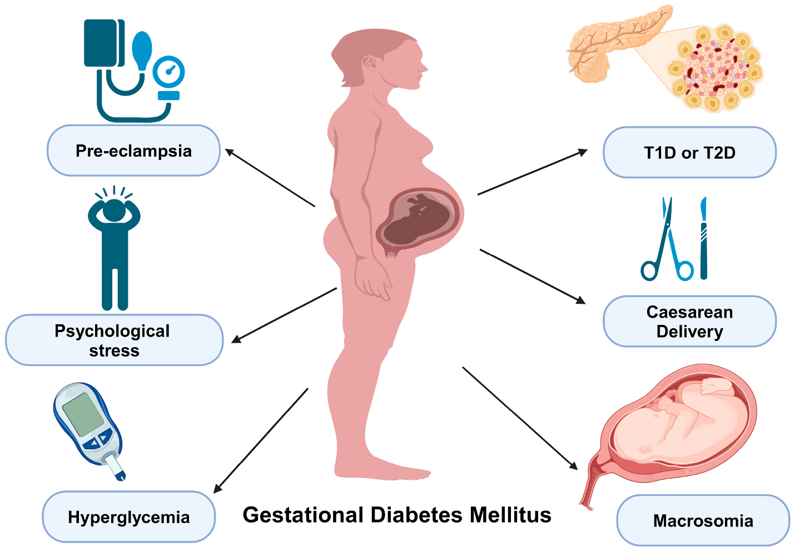
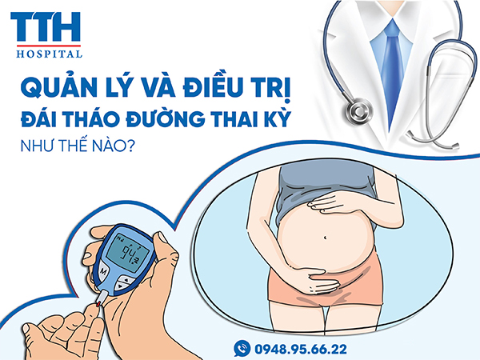
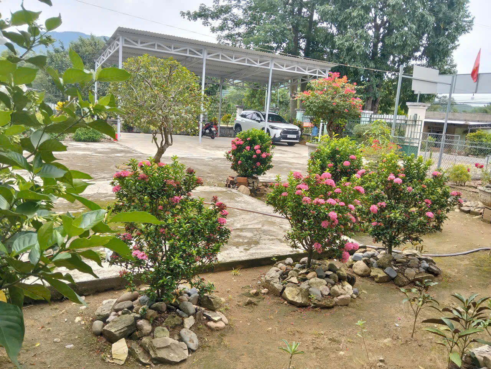

Bài Truyền Thông
Kiểm Soát Đường Thai Kỳ - Mẹ An Tâm, Con Khoẻ Mạnh
Kính thưa quý phụ nữ mang thai và bà con nhân dân!
Đái tháo đường thai kỳ là tình trạng đường huyết tăng cao được phát hiện trong thời kỳ mang thai. Nếu không được phát hiện và kiểm soát tốt, đái tháo đường thai kỳ có thể ảnh hưởng đến sức khỏe của mẹ và thai nhi.


Vì vậy, kiểm soát đường huyết trong thai kỳ là một nội dung quan trọng của chăm sóc sức khỏe bà mẹ và trẻ em.
1. Vì sao thai phụ cần kiểm soát đường huyết?
Trong thời kỳ mang thai, cơ thể có nhiều thay đổi về nội tiết và chuyển hóa. Một số phụ nữ có thể xuất hiện tình trạng đường huyết tăng cao.
Đái tháo đường thai kỳ nếu không được phát hiện và quản lý có thể làm tăng nguy cơ gặp các vấn đề sức khỏe trong thai kỳ, khi sinh và sau sinh.
Do đó, phụ nữ mang thai cần khám thai định kỳ và thực hiện các xét nghiệm, sàng lọc theo hướng dẫn của cán bộ y tế.
2. Làm gì để phòng ngừa và kiểm soát đái tháo đường thai kỳ?
Phụ nữ mang thai nên:
Khám thai định kỳ đúng lịch và thực hiện đầy đủ các xét nghiệm theo hướng dẫn của cán bộ y tế.
Thực hiện sàng lọc đái tháo đường thai kỳ theo hướng dẫn chuyên môn.
Ăn uống đa dạng, hợp lý, bảo đảm đủ chất dinh dưỡng; hạn chế thực phẩm và đồ uống nhiều đường.
Duy trì vận động thể lực phù hợp với tình trạng sức khỏe và thai kỳ theo hướng dẫn của cán bộ y tế.
Tuân thủ hướng dẫn điều trị và theo dõi đường huyết nếu được chẩn đoán đái tháo đường thai kỳ.
Không tự ý sử dụng thuốc hoặc thay đổi chế độ điều trị khi chưa có hướng dẫn của cán bộ y tế.
Phụ nữ đã mắc đái tháo đường khi mang thai không nên chủ quan sau khi sinh. Theo thông điệp của Tuần lễ Làm mẹ an toàn năm 2026, hãy tầm soát lại đường huyết từ tuần thứ 4 đến tuần thứ 12 sau sinh theo hướng dẫn của cơ sở y tế. Việc kiểm tra đường huyết sau sinh giúp phát hiện sớm tình trạng rối loạn đường huyết và có hướng theo dõi, chăm sóc sức khỏe phù hợp.
4. Thông điệp dành cho gia đình và cộng đồng
Chăm sóc thai phụ không chỉ là trách nhiệm của riêng người mẹ mà cần có sự đồng hành của gia đình và cộng đồng.
Hãy cùng động viên phụ nữ mang thai khám thai đúng lịch, ăn uống và vận động hợp lý, thực hiện sàng lọc đái tháo đường thai kỳ và tuân thủ hướng dẫn của cán bộ y tế.
Một thai kỳ được chăm sóc tốt sẽ góp phần bảo vệ sức khỏe của mẹ và tạo nền tảng tốt cho sự phát triển khỏe mạnh của trẻ.
Kính thưa bà con!
Kiểm soát đường huyết thai kỳ là một phần quan trọng trong chăm sóc sức khỏe bà mẹ và trẻ em.
Hãy chủ động khám thai, sàng lọc đái tháo đường thai kỳ và thực hiện đúng hướng dẫn của cán bộ y tế.
KHẨU HIỆU TUẦN LỄ LÀM MẸ AN TOÀN NĂM 2026
1. Khám thai định kỳ đúng lịch, sàng lọc đái tháo đường thai kỳ theo hướng dẫn của cán bộ y tế để bảo vệ mẹ và bé.
2. Dinh dưỡng và vận động hợp lý giúp thai phụ khỏe mạnh, phòng ngừa đái tháo đường.
3. Mẹ đã mắc đái tháo đường khi mang thai? Hãy tầm soát lại đường huyết từ tuần 4 đến tuần 12 sau sinh.
4. Chủ động nâng cao kiến thức, phối hợp cùng ngành Y tế vì một thai kỳ không đái tháo đường.
5. Nhiệt liệt hưởng ứng Tuần lễ Làm mẹ an toàn năm 2026 – Kiểm soát đường huyết thai kỳ, mẹ an tâm, con khỏe mạnh.
Bài truyền thông của Trạm y tế Tây Khánh Vĩnh xin được khép lại – Cảm ơn quý bà con đã theo dõi và hẹn gặp lại trong những bài truyền thông tiếp theo.
🌷 Thông tin bài truyền thông
Biên soạn : ChiLeNguyen
Đơn vị thực hiện : Trạm y tế Tây Khánh Vĩnh - Tỉnh Khánh Hoà.
📞 Liên hệ Trạm Y tế khi cần tư vấn 💙 Vì sức khỏe của mẹ và bé
✉️ Email: Tramgiangly@gmail.com
🎵 🎶 ♫

